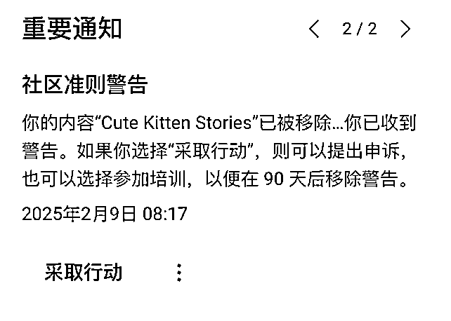

来源：https://rcnceg0u9uzz.feishu.cn/docx/QzqUdxyUNopPn0xFDPfcoIoPnud
大家好，我是NaNa。我是在2020年9月了解并且第一次加入生财，加入不久就参加当时赫赫有名的TikTok大航海，跟随大部队实现了美区1个月涨粉1万的目标，成功挂上小黄车，但由于当时工作实在太忙，我就只能忍痛割爱回去黑白颠倒地加班了。四年过去了，去年11月我再次回到生财，一下就被亦仁发布的超级标02——Youtube Shorts俘获了，又能积累AI领域的技能，又能赚可观的美金，有着明确可实现的路径，宇宙的激情仿佛一下就被点燃了。
于是我在去年12月便参加了Youtube大航海，成功发布第1条Shorts，今年1月中旬又参加Youtube实战陪跑至今，春节后尝试了@方波妮和@Gary曹淦两位教练摸索出来的油管新玩法，截止目前已达标开通高级YPP门槛（数据本周会更新），在整个过程中识别了很多坑、培养了扛住起起落落的心态，同时国内无心插柳柳成荫，成功赚到了超过3000+的收入、全网涨粉10w+，累计播放量5千万+。 教练一直鼓励我做分享，她说：“你已经很棒了，越分享越幸运”。真是，谁不想幸运常伴呢，感谢这篇帖子的最大推手，在此鞠躬亲爱的波妮教练。
| 平台 | 启动时间 | 内容数 | 粉丝数 | 累计播放量 | 累计获赞 | 累计收入 |
|---|---|---|---|---|---|---|
| 抖音号 | 2024.12.18 | 27 | 2.37万 | 350万 | 7.1万 | 33.8 |
| 快手号 | 2024.12.22 | 24 | 2.7万 | 240万 | 7.5万 | 44.9 |
| 小红书 | 2024.12.18 | 39 | 2604 | 20万+ | 1.8万 | 0 |
| 视频号 | 2024.12.18 | 45 | 9.8万 | 4400万+ | 129万 | 3000+ |
| 截至2025.02.16 |
这次分享主要出于三个目的：
一是对这两个多月的投入做个整体的复盘，给大家带来一些Youtube的避坑&经验和国内短视频平台同步分发的建议，同时也希望认识更多志同道合的圈友。
二是和大家一起加油打气，气馁很容易，但坚持有时也可以容易得只是知道有人一起同行而已。
三是对生财团队、教练团队表示由衷地感谢，作为感谢，我把自己用cursor开发，且常用的两个YouTube工具分享给大家。
Youtube Shorts的运营我把它大体分为以下四个部分：
现在回想起来，从长期深耕Youtube这个领域来看，赛道的选择其实是非常重要的，不过对于这个阶段的新手来说，未必有这样的认知。所以先选择一个你认为自己能、也感兴趣做的，坚持个一段时间慢慢就会有些些体感。生财上有非常多优秀的圈友分享的精华帖，还有宝藏Youtube航海手册，写出来的赛道每个都能0-1。选择了赛道之后去刷、去搜，找到做这个赛道的成功玩家，关注他们，对标库就能初步建立，他们的爆款内容就是你的内容冷启（选题策划）。账号的冷启也就是我们常常说的注册、养号、频道装修、观察是否存在0播等账号问题，生财上也有对应的优质帖，这里不做赘述。
现在我马上要分享第一个避坑，它发生在内容冷启阶段，如果你现在是个Youtube新手，这个坑不一定能识别出来，我把它写在这里，是为了让新手圈友能少走弯路。
这是我在之后的Youtube实战陪跑时期问的第一个问题，到底是对标一个频道的爆款还是多个频道的爆款呢？我们有那么多对标，他们的爆款都拿来复刻了，有的流量好，有的不好，而且一直等不到一个自己频道的爆款，这是为什么？经过 方波妮和Gary曹淦两位教练诊断和分析，顿时收获了新知：一段时间内仅能对标一个频道，因为这个频道能持续做出爆款，就一定有特定的受众群，不同频道的受众群不同，如果多头对标会让Youtube算法没法快速明确你的频道需要推给哪些受众，这样就等不到Youtube的第一次大推流，我的频道迟迟没爆款，这是个很大的战败因子，按照发布时间降序排列，可以看到前期（最下面）我的内容是五花八门，有孕猫的、亲子的、还有我原创的僵尸、科幻内容，每次都陷入今天要复刻什么的困惑。近期改成了A动物救B动物-美好相处-A动物危机-B动物报恩的爆款公式，数据相对来说就比较稳定，内容也更容易进行改编。
这个也是上次听 Gary教练直播时捕获的一个tips：既然内容都做了，为什么国内平台不发一发呢。在国内平台分发直接带来了两大收获：
比如猫、猴子、老鼠的这条5.1万是基于动物报恩主题原创出来的故事，它同时让我在国内的抖音号、快手号成为百万爆款、小红书突破千粉，连ai猫咪故事一直没流量的视频号也有22万的播放，引发了评论区的大量讨论。这个视频引起了大量对猴子的声讨和老鼠的夸奖，同时老鼠的形象设计是比较可爱的，惹人怜惜。
评论多是爆款的结果，同时也藏着爆款的原因，归根结底都是能引起共鸣的情感底色，大家可以去总结对标爆款的高赞评论去摸熟复刻的要素。Youtube上的Meow频道就是用东亚男孩、骨瘦如柴的橘猫、可爱的拯救者来组成一个动物感恩故事，东亚男孩是那个邪恶的对象，人类的坏、可爱的不同动物、悲惨的猫都是能引起大家讨论的话题。他的视频比其他账号的评论高出数十倍。
我从去年12月18日开始发布内容，前期都是AI猫咪故事，在抖音号、快手号、小红书都表现还行，但是视频号除了第一条爆款开通原创后（冥冥天注定，后面大爆直接吃到收益），就没流量了，粉丝停留在100+。进入到实战陪跑，除了我已经做了一个多月的AI猫咪故事的频道，教练团也分享了一些最新的赛道玩法，我也找了个短平快的动物救援赛道开始了我第2个账号的征途。没想到，这个赛道帮我赚到了第一笔收入，第一条内容就成为了爆款，带来9.7万含金量很高的中老年粉丝、2700+的收入、4282万的播放，且仍有长尾流量。
结合粉丝画像分析下来最大的原因主要如下：
因为国内没有作为我的主要运营阵地，所以也没有成体系的去复刻爆款和运营的规划，但是也做了些许尝试。由于我们正值蛇年春节，加上蛇是东北的柳仙，我立马做了一条蛇的动物救援，发了不到1小时，瞬间突破20万+，甚至比当时的狐仙更快，但是很遗憾，不多久视频号就判这条内容违规，没能复现一个新的大爆款。因为这个经验，我没有再做黄鼠狼的视频，而是改成了浣熊，因操作不当导致同样的视频发了两次且声明了原创，视频号没判为我违规，这两条数据都比其他的要好，代表东北仙灵文化是可以继续探索的方向。让人意外的是，这条金蛇我也发在了Youtube，竟是我的频道里流量最多的，有19k
接下来也给大家总结了几个经验：
| 平台 | 启动时间 | 内容数 | 粉丝数 | 累计播放量 | 累计获赞 | 累计收入 |
|---|---|---|---|---|---|---|
| 抖音号 | 2024.12.18 | 27 | 2.37万 | 350万 | 7.1万 | 33.8 |
| 快手号 | 2024.12.22 | 24 | 2.7万 | 240万 | 7.5万 | 44.9 |
| 小红书 | 2024.12.18 | 39 | 2604 | 20万+ | 1.8万 | 0 |
| 视频号 | 2024.12.18 | 45 | 9.8万 | 4400万+ | 129万 | 3000+ |
| 截至2025.02.16 |
我们继续进入AI内容工作流的搭建和提效的版块，如果有做AI猫咪故事赛道的圈友会知道，这个赛道做起来繁琐、复杂，如果涉及微创新和故事改编，用时会更长，一开始一天做一条内容是非常正常的，练熟了考虑到各大平台的生成速度和反复抽卡，也得3-4小时一条，我一直苦恼于它的提效。所以我灵机一动把原来的工作流做了以下修改，然后我就收到了Youtube机审的自动移除，尽管我做了动物角色的改编，但是复现程度还是太高了。大家可能会发现有些爆款有很多搬运大量存在而且也是爆款（可能我那个对标爆款被抄得太多了），但还是谨慎为好。
| 原流程 | 新流程 |
|---|---|
| 对标爆款关键帧截取 | 对标爆款关键帧截取 |
| AI图生脚本（这里可以改编） | AI图生图 |
| AI文生图 | |
| AI图生视频 | AI图生视频 |
| 视频剪辑 | 视频剪辑 |
但在这里我想进一步探讨的是，我认为图生图是一个很好的提效补充。比如当我们拥有了一个爆款的场景，可以直接把狗换成浣熊（主体的替换），并且利用原图还可以生成新的场景：找到其中一个关键帧，加一个漂亮女生在旁边看着浣熊，我们得到下面这张图，然后通过图生视频我们可以让女生和浣熊互动，这样就完成了动物救援最后的视频部分（这里仅仅只需要一句话的想象）。比如下面的蜂窝原图，通过文生图抽卡很难达到效果，用图生图就很容易做得比较接近，是个提效和补充的好方式，但是不建议全片都使用。
我在一次制作长视频中，用pixabay的无版权音乐作为背景音乐，本以为万无一失，没想到发布以后，不久收到了社区警告，视频被移除。Youtube并没有给出详细的理由，所以我和教练沟通后推测大概率是因为音乐版权的问题。

我按照Youtube的要求完成了培训—90天内会自动解除警告，但我仍觉得很不服气，明明操作上没什么问题，也为了验证后续pixabay这类免费音乐是否可用，所以还是决定提交申诉，最终证明我的决定是正确的：不到一天的审核时间，Youtube就撤销了对我的警告，改成了Shorts的版权限制，也意味着不影响使用，如果涉及收益给音乐版权方分钱即可。
这个经验告诉我们，大胆申诉，有问题也至少能得到明确的解释。申诉理由：The content of the video consists of videos that have already been published, all of which I independently created using AI. The background music is from Pixabay, which is copyright-free (and I provided the links). May I ask which community rules have I violated?【长视频的内容都是已发布的视频，都由我用AI进行独立创作，背景音乐用的是pixabay上的无版权音乐（链接），请问我违反了社区的什么规则？】
另外，Youtube上有音频库，可以直接使用，这个最安全。
最后，实战出真知，大家都各有各的真知，这些内容希望能给到看帖子里的你一点点帮助。说到这里，我想大赞一下最近的Youtube陪跑营，两位教练带着100多人的团队，每天都有新的问题，但每天也都有新的解法，实操就是那么琐碎又见招拆招，这种方式真的是太好了，尤其是赛道和玩法都在不断变化的Youtube，我们需要这样的共同奋斗。非常感谢生财全体团队，能让我在两个多月收获满满，希望未来能和大家一起赚大钱！感谢 两位教练，毫无保留地分享自己的经验和知识，战绩卓越啊。同时感谢两位教练、@七天老师对本文的指导和帮助。
最后分享两个我用Cursor写的小工具，我做AI内容会常用到，希望对大家有助力。
因为我常用Chatgpt的DALLE3，下载下来是WebP，有些图生视频的平台不支持这个格式，所以做了个简单的工具，这个是地址：webp-change-new.vercel.app
老马之前分享的是windows的工具，因为我用mac所以只能自己再做一个，我觉得还挺好用，参数我调整这个之后不会丢帧，但是会重复，可以下载下来进行删减，很快的。夸克网盘地址：https://pan.quark.cn/s/7785e92bb6ff